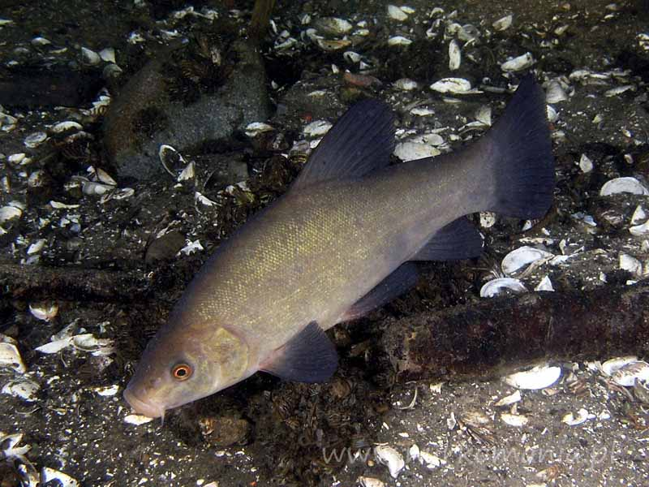
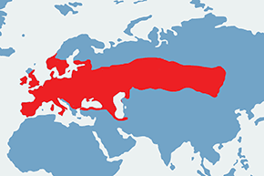

Okoń europejski (Perca fluviatilis) to dość pospolita w Polsce ryba drapieżna z rodziny okoniowatych. Ryba ta ma bocznie spłaszczone ciało z wygrzbieceniem, które u osobników dorosłych wygląda jak garb. Otwór gębowy zaopatrzony jest w liczne zęby. Ryba ta ma dwie płetwy grzbietowe. Pierwsza z nich ma od 13 do 17 twardych promieni, a na tylnej jej krawędzi znajduje się ciemna plama. Płetwy brzuszne, piersiowe i ogonowa są czerwone. Ubarwienie jest dość zmienne. Grzbiet jest ciemnozielony, boki zielonkawe, żółtawe lub szaro-zielone, brzuch jasny. Po bokach widać ciemne pasy, które maskują rybę w otoczeniu. Jest ich od pięciu do dziewięciu. Ciemniej ubarwione ryby żyją w wodzie głębokiej, w strefie przybrzeżnej spotyka się jaśniej ubarwione osobniki.
Występowanie i środowisko
Okoń występuje w Europie. Podejmuje się próby jego introdukcji w Australii. Ryba ta zasiedla wszelkie rodzaje zbiorników wodnych, a więc można ją znaleźć w stawach, jeziorach, rzekach oraz na Wybrzeżu. Lubi gęstą roślinność wodną. Okoń nie występuje w Szkocji, na Półwyspie Apenińskim i Pirenejskim, w Norwegii i na północno-zachodniej części Półwyspu Bałkańskiego.
Tryb życia i zachowanie
Maksymalna długość życia wynosi 22 lata. Ryba ta świetnie wtapia się w otoczenie, dzięki maskującemu ubarwieniu. Okoń rośnie wolno, szczególnie te osobniki, które żyją w płytszych wodach.
Pożywienie
Okoń poluje na bezkręgowce wodne oraz inne ryby. Zjada też ikrę innych ryb.
Rozmnażanie
Tarło odbywa się na płyciznach od połowy kwietnia do maja, gdy temperatura wody osiąga 7 °C. Samica może złożyć nawet 70 tysięcy jaj, zazwyczaj jest to 7-20 tysięcy. Ikra składana jest w postaci długich wstęg. Rodzice pozostawiają jaja bez opieki. Samce po 2-3 latach, a samice po 3-4 latach stają się dojrzałe płciowo.
Ciekawostki
Jest to ryba ceniona w wędkarstwie, jej mięso jest bardzo smaczne. Ryba ta jest uważana przez hodowców za rybi chwast. Wędkarze nazywają ją czasem garbusem.
Okres ochronny: nie ma
Wymiar ochronny: 15 cm
Dobowy limit połowu: nie ma
Rekord Polski: 2,65 kg 55 cm